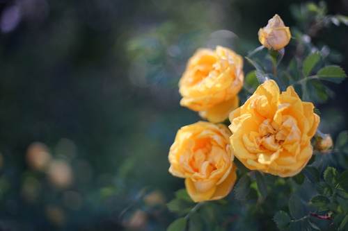
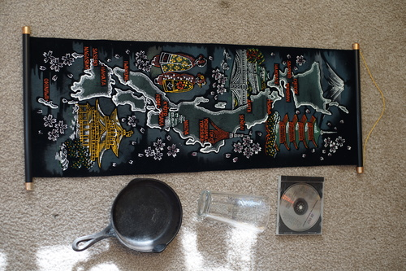
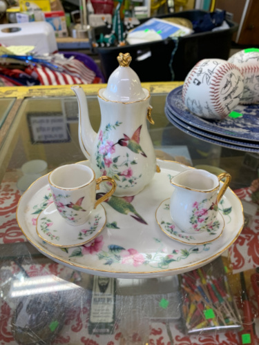
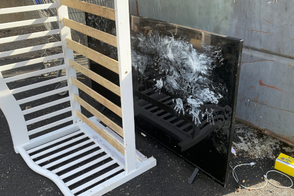
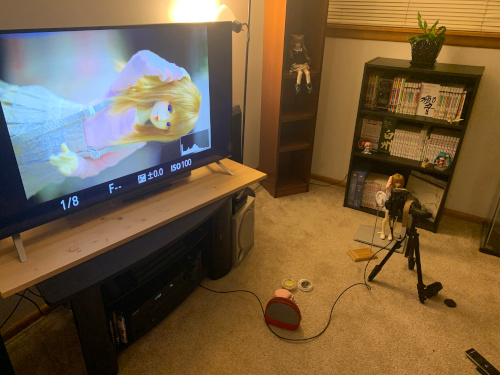
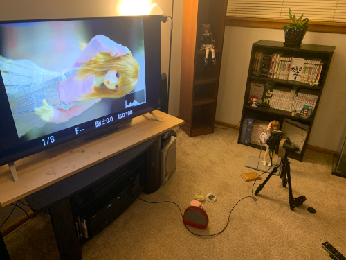

check this guy out. a real cutie! he let me get fairly close but the photo is pretty cropped so im not THAT close
i took a ton of flower pics today and even stopped down to f/4 so they'd be easier to cut out and put in my layout. im not going to post them all here since you can probably see them right now! i found some lumpy yellow roses though that didnt make the cut
these are my neighbor's roses! they aren't really taking care of them or even noticing them but these roses smell so good!!! i have to sniff every time i walk past! sometimes i even force ryan to sniff
i also checked out the thrift store today! didnt find too much though
i sent ryan a pic and he said he wanted it so i bought it for him. i didnt know kyoto was so close to osaka!
only mark i can see is a 3 on the handle base. it's smooth on the inside like an antique. i'm not so sure about the current lodge pans because theyre so rough... (and heavy!)
the cashier asked me if i was "trying out uh.. don henley?" and i was like "you dont know boys of summer??" and he didnt so i told him to look it up when he got home.
from the year i first went!
i saw this cute doll sized hummingbird tea set (3 of my favorite things) and i was so disappointed to see the teapot was broken and it was missing a ton of pieces!
on my walk back i saw this disaster of a TV. if i ever end up with children i am going to buy a doll safe. its like a gun safe but you keep your dolls in it.
and finally some doll posting!

i took my unoa apart and restrung her too (the same night as the last post). sochi has so much trouble standing in those boots...

and then i had a little photoshoot in the manga corner! it was super fun!
 

theres this dude (from doll dreaming ofc) who keeps posting his off topic jointed anime figures on DoA and i saw a girl asking about smart dolls and someone posted a horse doll??? im just in disbelief no one reads the rules on this site anymore. seriously?! gatekeeping definitely kept the post quality up when you had to have an invite to get in. i miss the intense moderation.